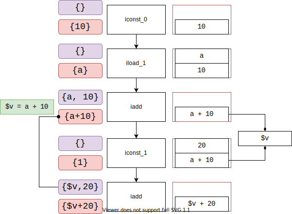

Bytecode to TIR Algorithm
Bytecode
How to treat stack?- expression holder (Soot impl)
- register collection (Jimple paper)
Soot Algo (1)
class A {
public static int f(int a, int b) {
int sum = 0;
for (int i = (a > b) ? a + 1 : b + 1; i < a;) {
sum = sum + i;
}
return sum;
}
}
#v_0 = 0 stack++
sum = #v_0 stack--
#v_0 = a stack++
#v_1 = b stack--
Stack depth == temp value number
int t = a + b;
-----------
#v_0 = a
#v_1 = b
#v_0 = #v_0 + #v_1
t = #v_0
Solution: transform by dataflow analysis.
Solution: find "web"
Soot Algo (2)

Where is variable name
- may need
java -g - careless impl of merge (soot)
- reduce instruction size
Where is variable name
static int f(int a, int b)
{
int k = a + 1;
int j = k + 1;
return j;
}
static int f(int, int)
{
int a, b, k, j;
a := @parameter0: int;
b := @parameter1: int;
k = a + b;
j = k + 1;
return j;
}
static int f(int a, int b)
{
int k = (a > b) ? a + 1 : a + 1;
int j = k + 1;
return j;
}
static int f(int, int)
{
int a, b, $stack7, $stack4;
a := @parameter0: int;
b := @parameter1: int;
if a <= b goto label1;
$stack4 = a + 1;
goto label2;
label1:
$stack4 = a + 1;
label2:
$stack7 = $stack4 + 1;
return $stack7;
}
merge(k, k) = $stack6
merge(j, j) = $stack8
Disadvantages:
- Every block need inEdge() times visit
- Complicated implementation
- Eliminate copy in source
- Lose variable name
Ours
Sketch
- Simulate JVM
- Operand Stack ~ Stack
- Exec a basic block ~ Translate a basic block
- Every basic block exec only once
- Pass 1: Build Infos
- Pass 2: Build TIR by one traversal
Info
\[ \begin{aligned} \textsf{Info} ::=& I\ \{& i &: [\textsf{Instr}] \\ & &o &: \textsf{Var} \\ & &w &: [\textsf{Var}]\quad \\ & &r &: [\textsf{Var}]\quad \} \\ &| V\ \{& v &: \textsf{Var}\quad \} \end{aligned} \] Total function $f : \textsf{Instr} \rightarrow \textsf{Info}$Disjoint sets of Instr $s$ (Webs)
Exec basic block(1)
Local Read/Write
iconst_1
iload_0
iadd
istore_0
-----------
0 ==> Var v
1 ==> 1. Var a
2. $0 = a
2, 3 ==> 1. $1 = l0 + l1,
a = $1
2. a = l0 + l1,
null
iload_0
iconst_1
istore_0
istore_1
-----------
$0 = a
a = $const_1
b = $0
iload_0
iconst_1
iadd
iconst_2
istore_0
...
istore_0
-----------
$0 = a + $const_1
a = $const_2
...
a = $0
iload_0
iconst_1
iadd
iload_0
istore_1
...
istore_0
-----------
$0 = a + $const_1
b = a
...
a = $0
Local Variable Read/Write Rules
Read (i = load_x), $i \in S$
If $\forall i \in S, \forall i' \in \textsf{Use}(i), \forall (p = i \rightarrow i'), \textsf{store\_}x \notin p$, assign variable $x$.
Else, assign temp variable
(Maybe) write $i \in S$
If $\forall i \in S, \forall i' \in \textsf{Use}(i), i' = \textsf{store\_}o, \forall (p = i \rightarrow i'), \textsf{store\_}o \notin p \land \textsf{load\_}o \notin p$, assign variable $o$.
Else, assign temp variable
Exec Branch
- All edge with same initial stack
- Every basic block only exec once
Extra copy
a = #v#v = aa = $v$v = a$v = #v#v = $v
Extra copy
- Mutiple use (
dup) - (#) variable
Extra copy (must be)
Extra copy (may be)
Initial stack is not empty?
- two or more prior node
- two or more initial stack
- only few chance* they are equiv
*(eclipse, antlr, chart, jython): merge 8242 times, 49 one same, 25 real same (need not merge)
Why not just alloc variables for them?